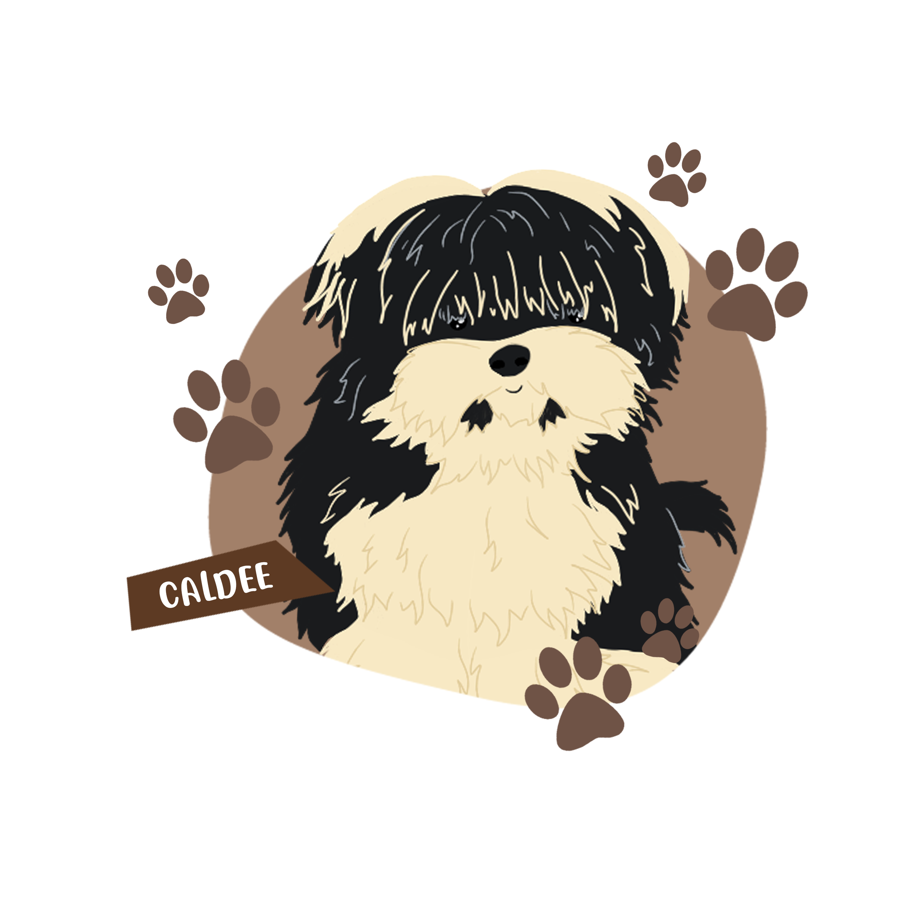
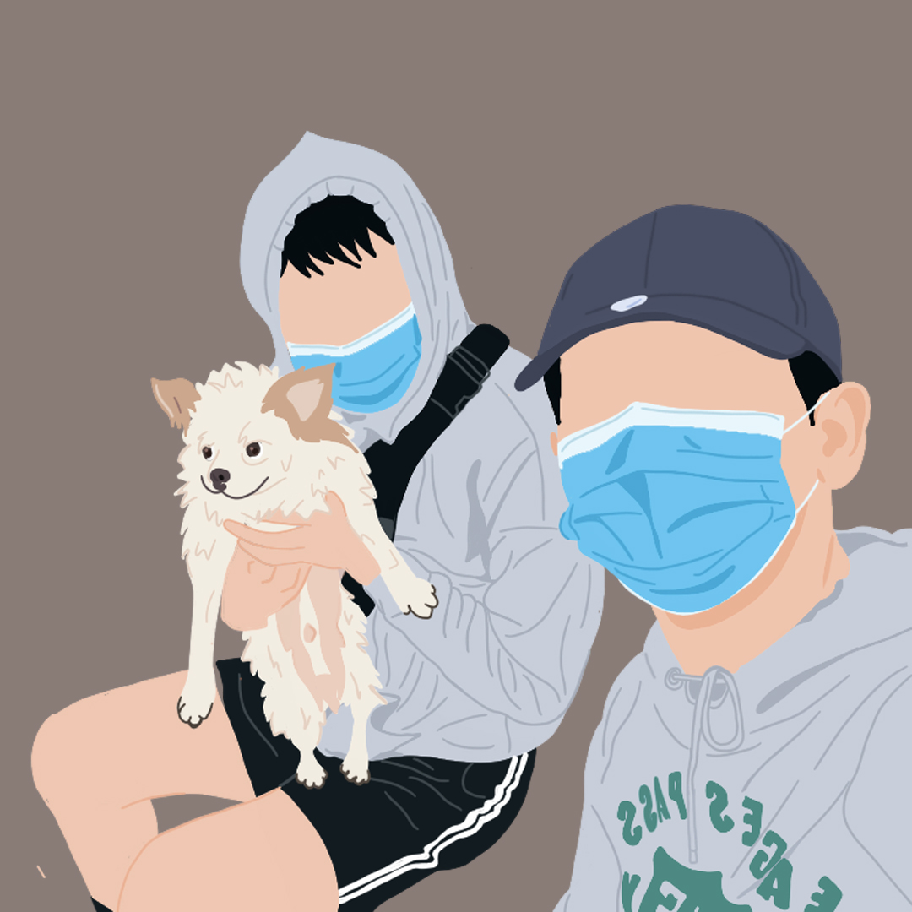
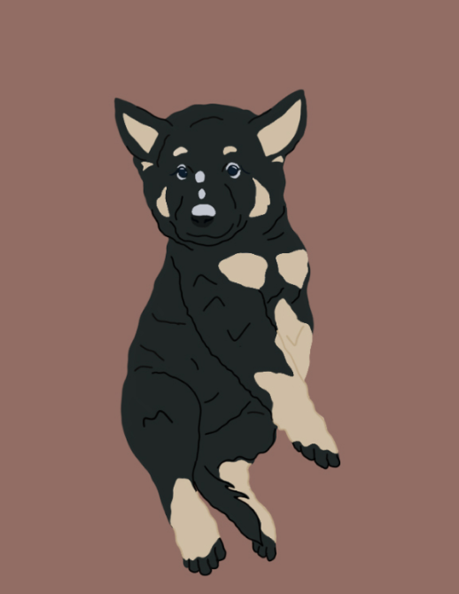
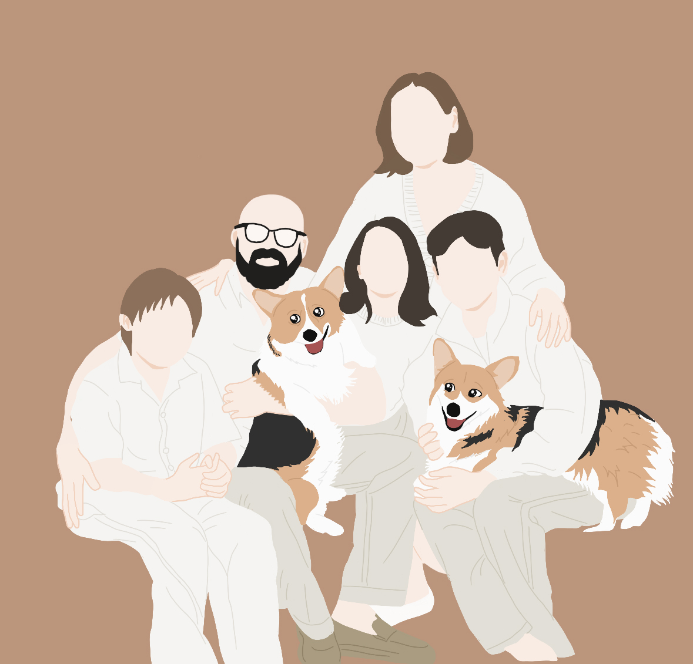
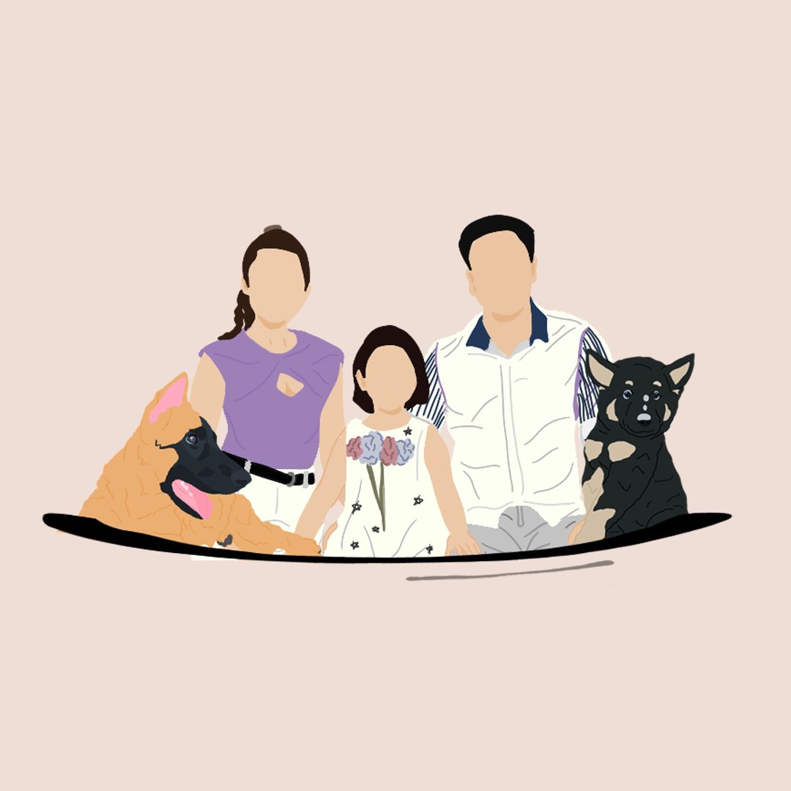
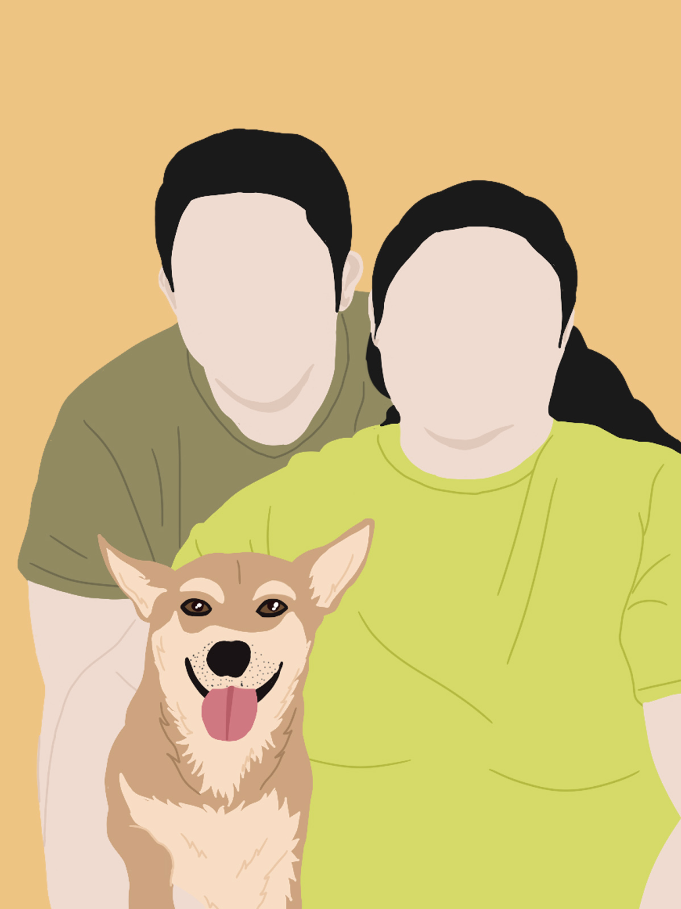

Pets woven into the illustration work, from a simple line-art icon to full family portraits.
Pets make their way into this set as the main subject and as part of the family — a dog rendered as a clean line-art icon, a silhouette set against a solid color backdrop, and dogs illustrated alongside their owners in full portraits.
Two of these pieces use a solid color background instead of a transparent one, giving the illustration a poster-like, ready-to-print backdrop.
All 6 pieces from this collection.





